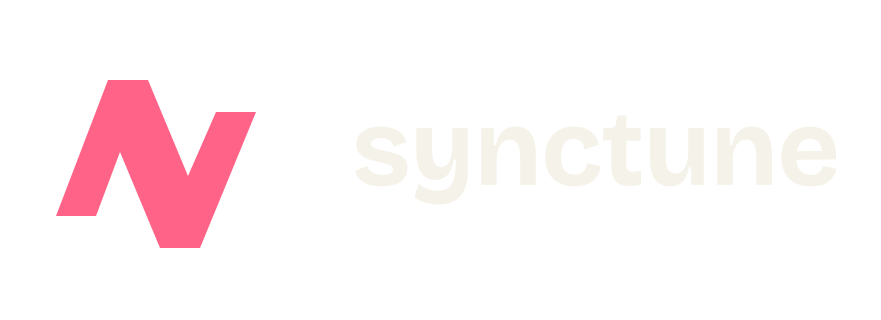

Scream Forge
A commercial vocal effects plugin being built for metal singers, with a vocal-production chain in mind.
Source is not public.

Synctune / Music / From the first take
Software for the recording, the rough mix, the rehearsal and the next show. Built by people who would rather be making music.
Production / Public source
A digital audio workstation for recording, production, mixing and mastering. The place to start when the idea needs to become a track.
Around the session
From vocal effects to finding a show. Some projects have public source; others are still in private development.
A commercial vocal effects plugin being built for metal singers, with a vocal-production chain in mind.
Source is not public.
Turn YouTube videos into karaoke experiences, with Track2Stem providing the audio separation.
Source is not public.
Separate a track into stems using hybrid spectrogram and waveform source separation.
Explore Track2StemConvert audio files and YouTube media between formats locally, with metadata editing.
Explore AnyTrack ConverterA concert-discovery project with a particular interest in metal and core subgenres.
Explore Find ConcertsFind band members and collaborators through musician profiles and open calls.
Explore Every MusicPublic source is not a release guarantee. Repository links use the projects' current homes while organization transfers are pending.
Away from the code
Matteo's artist projects have their own websites. Follow the links to listen, explore and find vocal coaching.
Matteo's band. Releases, music and the band's own home on the web.
Visit Devoid of BeautyMatteo "Black" Bianchi's metal vocals, performances and extreme vocal coaching.
Visit b143ck.musicAlso in the Synctune portfolio
Open Playlist is an independent Synctune project for portable playlists. Its migration engine connects music services without making a single vendor the center of your collection.
It keeps its own brand and website, alongside the Music branch.
Visit Open Playlist